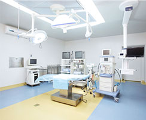

上海宏康医院
Shanghai Hongkang Hospital
成立于2004年，是一所集医疗、科研、康复、健康管理于一体的现代 化综合性医院，属上海市医保定点单位、价格诚信建设单位。
耳鼻咽喉科
医院秉承以“医生兴院、技术立院经营壮院、服务强院”为办院宗旨组建了多个高水平并有较大影响力的临床科室不断深入完善治疗方法 科常见病、多发病、疑难病诊治方面成就卓越。耳鼻咽喉科汇集着知识渊博、造诣深厚并拥有多年临床经验的医师，致力发展微创技术，开展了多个特色疗法。

先进设备
大概耳鼻喉科在提升软件实力的同时，同样力求硬件上更完备。配备了多个层流手术室，引进了丹麦M adsen听力系统、纤维喉镜、德国STORZ内窥镜、微波治疗仪、声阻抗、超声雾化器、美国杰西等离子微创消融系统等诊疗设备，为治愈耳鼻喉科疾病提供了坚实的硬件保障。社会公益
上海宏康医院秉承“宏扬博爱 和谐健康”为理念，积极响应参加社区各项公益活动，为居民提供免费检查咨询，病诊治方面成就卓越。耳鼻咽喉科汇厚并拥有多年临床经验的医师，致力发展微创技术，开展了多个特色疗法。